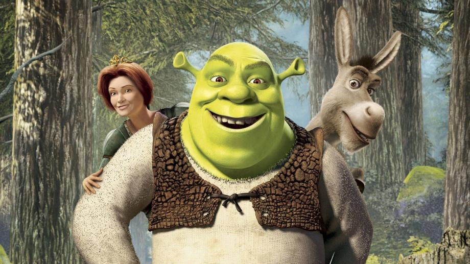
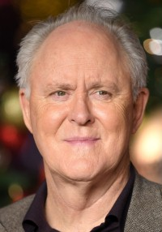
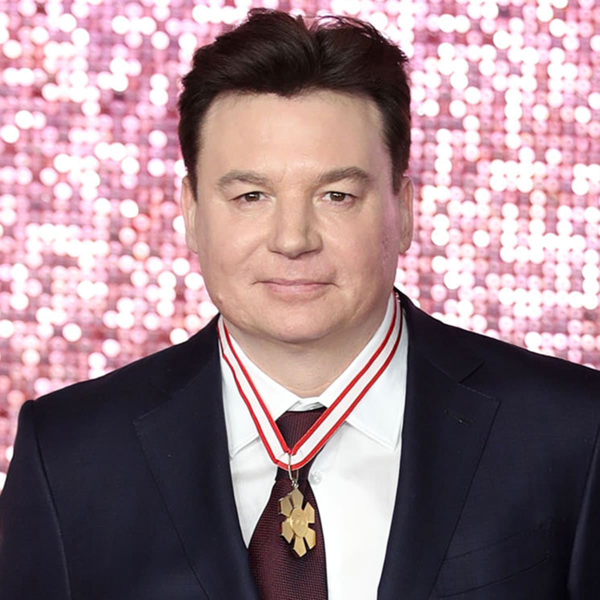
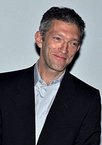

| Nazwisko i Imię |
Klasa |
Nr w dzienniku |
| Jakub Mieszczak |
3AG |
5 |
Shrek 1
Shrek i Fiona postanawiają odwiedzić rodziców księżniczki,
którzy nie wiedzą jednak, że poślubiła ona ogra,
a sama zmieniła się w ogrzycę.

Podstawowe informacje
| Tytuł polski |
Shrek 2 |
| Tytuł angielski |
Shrek 2 |
| Rok produkcji |
2004 |
| reżyser |
Andrew Adamson |
| Scenariusz |
David N. Weiss |
| Joe Stillman |
| Andrew Adamson |
| J. David Stem |
| Linki |
|
Opis fabuły
Po powrocie z miesiąca miodowego Shrek i Fiona postanawiają odwiedzić rodziców księżniczki, do których dotarła jedynie wiadomość o ślubie ich córki z prawdziwą miłością jej życia. Młoda para rusza więc do królestwa Zasiedmiogórogrodu. Problem jednak w tym, że rodzice Fiony w ogóle nie zdają sobie sprawy z ciążącej na niej klątwy. W związku z tym są pewni, iż poślubiła ona kogoś z wyższych sfer, kawalera pokroju Lorda Farquaada - władcy rządzącego zasobnym państwem. Jakież więc jest zdziwienie, kiedy ich zięć okazuje się ważącym ponad 300 kilogramów zielonym ogrem nie przywiązującym wagi do higieny, któremu w dodatku towarzyszy gadający osioł.
Role w filmie
| Role w filmie |
- Mike Myers
- Shrek
- Eddie Murphy
- Osioł
- Cameron Diaz
- Księżniczka Fiona
|
Fotosy
Obsada filmu Shrek
|
 |
|
 |
|
 |
 |
|
 |
 |
| Antonio Banderas |
Cameron Diaz |
Conrad Vernon |
Eddie Murphy |
Jim Cummings |
John Cleese |
John Lithgow |
Julie Andrews |
Mike Myers |
Vincent Cassel |
| Brak inf |
Królewna Fiona |
Ciastek |
Osioł |
Kapitan straży |
Brak inf |
Lord Fraquaad |
Brak inf |
Shrek |
Monsieur Hood |